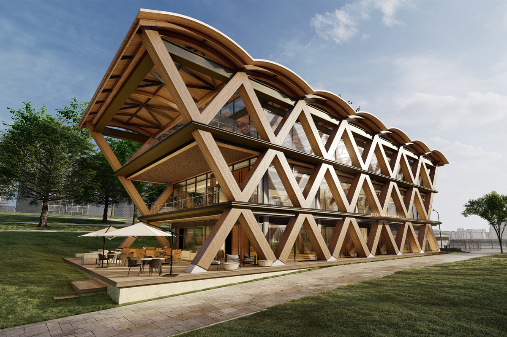
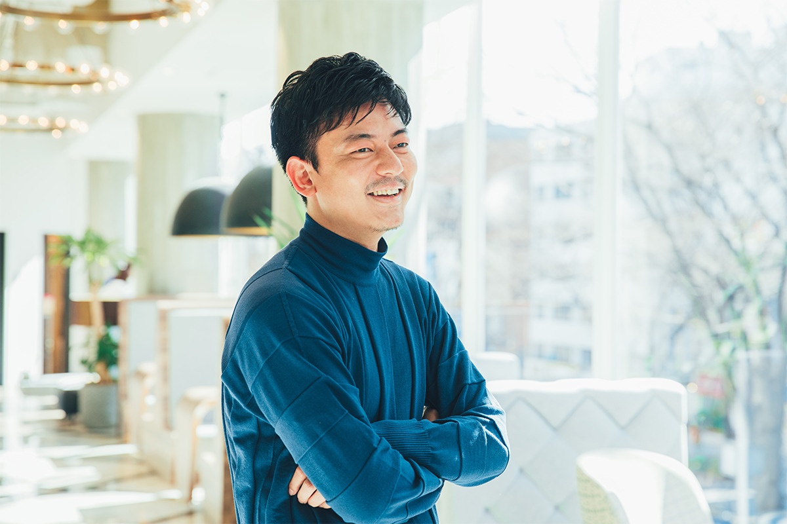
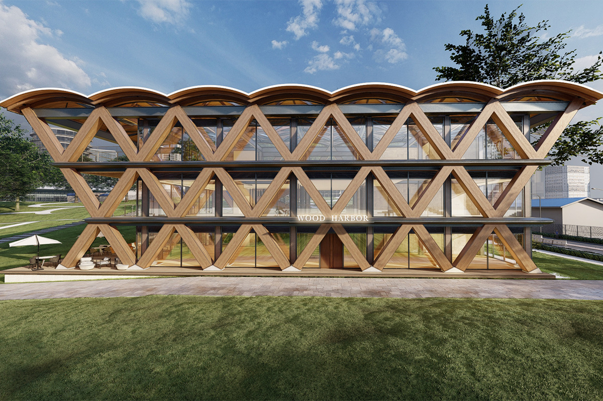
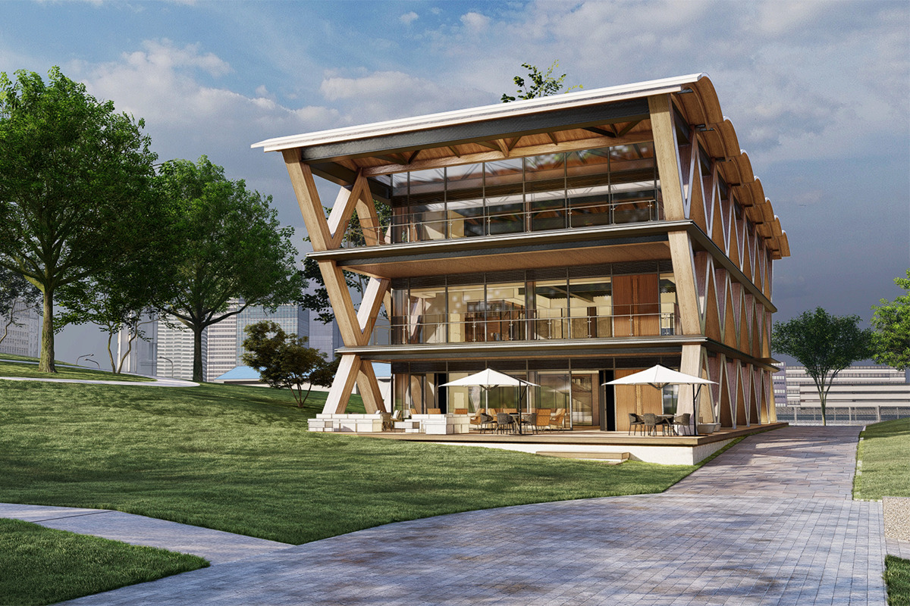

Префектура Канагава · Ёкогама, Минато Мирай · архитектура
Парк Ринко в Ёкогаме: деревянный павильон у порта, задуманный по примеру святилища Исэ

Парк Ринко в районе Минато Мирай самый большой в этой части Ёкогамы: набережная вдоль порта, широкие газоны, по выходным семьи и бегуны. В 2022 году для него проектировали здание из дерева, которое задумывали как новую примету города.
Проект
Новое здание для самого большого парка Минато Мирай
Парк Ринко лежит на берегу Ёкогамского порта, в районе Минато Мирай. Это самый большой зелёный массив района: прогулочная дорожка вдоль воды, просторные газоны и деревья, под которыми летом можно найти тень. По выходным сюда приходят семьи с детьми и любители бега.
В 2022 году архитектурное бюро Тайдзю Ямаситы работало здесь над проектом многофункционального здания. Внутри собирались открыть кафе и ресторан, а для бегунов устроить станцию с камерами хранения и душем. Здание задумывали как образец экологичной архитектуры следующего поколения: с бережным использованием дерева и смелой деревянной конструкцией. Завершить его планировали не раньше 2023 года. Комплекс открылся 17 октября 2025 года под названием Yokohama Timber Wharf.

Идея
Здание, которое живёт рядом с природой
Раз в парке так много газонов и тенистых деревьев, здание задумали прежде всего как место отдыха: кафе и площадку для тех, кто приходит в парк гулять и заниматься спортом.
Ямасита ставил перед собой несколько задач. Здание должно было воплощать идею «Ёкогама, творческий город» и при этом жить в согласии с окружающей средой, как того требует время, и вдобавок оживить весь район Минато Мирай. «Творческий город» это городская программа, которую Ёкогама ведёт с 2004 года: развитие культуры, искусства и экономики соединяют в ней с обустройством городской среды, чтобы город рос долго и привлекал людей из Японии и из-за рубежа.
Архитектура
Дерево во весь фасад
Проект строился на смешанной конструкции, где огнезащитной облицовкой несущих элементов служит дерево. Так можно широко использовать древесину, к которой снова вернулся интерес как к экологичному материалу, и при этом сохранить прочность и огнестойкость, которых требует закон.

Деревянные элементы Ямасита не стал выстраивать просто по горизонтали и вертикали. Весь фасад сложен из крупных ромбов, и они резко контрастируют с горизонтальными линиями перекрытий и со стальным каркасом и стеклом, которые видны за ними.
Крыша идёт чередой пологих арок, чтобы повторить линию крон деревьев, которые уже растут в парке. Деревянные детали задумали менять через определённое время, не повреждая основной конструкции: древесина ходит по кругу, а само здание служит долго. Только так, по мнению архитектора, проект сможет стать новой приметой парка, которая запомнится людям.
Истоки
Чему учит святилище Исэ
Мысль о том, что древесина должна ходить по кругу, Ямасита взял из обряда «сикинэн сэнгу» в святилище Исэ. У святилища около двух тысяч лет истории. И у Внешнего, и у Внутреннего святилища есть по два одинаковых участка, на востоке и на западе, и каждые 20 лет главные здания заново строят в той же форме на соседнем участке.

Обряд ведётся с 690 года. Сначала рубят деревья, потом доставляют брёвна, возводят святилище, через 20 лет разбирают его, снова рубят деревья, и так по кругу. Каждый шаг проходит как церемония с благодарностью и уважением к природе, а древесину разобранных зданий по возможности используют заново. В Японии ещё полторы тысячи лет назад берегли каждый материал и держали человека, природу и здания в равновесии.
Взгляд
Не сносить и строить, а сохранять
Ямасита задавался вопросом: можно ли и в сегодняшней Японии строить по тому же принципу? Можно ли сделать здание из дерева, где материал правильно обновляется и не вредит природе?
В XX веке, когда в Японии распространился модернизм, страна массово строила рациональные и функциональные здания и так же массово их потребляла. Рациональные, они часто выходили дешёвыми и сделанными без внимания к каждой детали. Старые здания привычно сносили и ставили на их месте новые, и это сильно било по природе. Архитектор считает, что городам пора не гнаться только за рациональностью, а беречь каждое здание и пользоваться им долго.
Новый павильон должен был соединить оживлённую набережную, которая тянется сюда от торговых кварталов, со спокойствием парка, который любят жители окрестных домов. В 2025 году на первом этаже Yokohama Timber Wharf открылись кафе-пекарня и магазин пончиков, а на третьем этаже бегуны и любители прогулок могут оставить вещи и переодеться.
Yokohama Timber Wharf
- Адрес
- префектура Канагава, Ёкогама, район Ниси, Минатомирай, 1-1-5 (парк Ринко)
- Как добраться
- около 14 минут пешком от станции Минатомирай или станции Син-Такасима